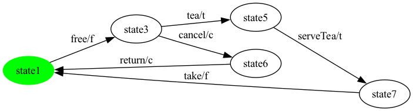
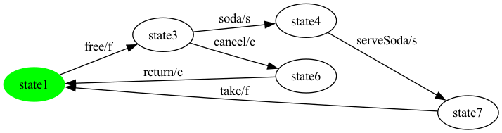
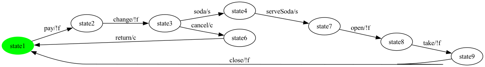
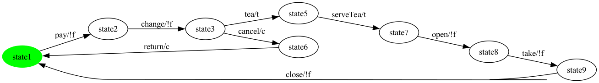

Generated by PerProductReportGenerator. For each valid SVM configuration enumerated by Sat4JSolverFacade, this report shows the projected + SCC-repaired product-level FTS plus the test suites generated for state, all-transitions, and all-transition-pairs coverage. Action sequences are written as a -> b -> c -> ....
Features actually labelling transitions in the SPL FTS (filter applied below): c, f, s, t. Abstract / grouping features are omitted from the per-product feature lists.
Selected features: selected = {c, f, t}
Repaired FTS: 5 states, 6 transitions

free -> tea -> serveTea -> take -> free -> cancel
SVM_p1_trans_seg0: free -> cancel -> returnSVM_p1_trans_seg1: tea -> serveTea -> takeSVM_p1_pair_seg0: free -> tea -> serveTea -> take -> free -> cancel -> return -> freeSelected features: selected = {s, t}
Repaired FTS: 8 states, 9 transitions

pay -> change -> soda -> serveSoda -> open -> take -> close -> pay -> change -> tea
SVM_p2_trans_seg0: pay -> change -> tea -> serveTeaSVM_p2_trans_seg1: soda -> serveSoda -> open -> take -> closeSVM_p2_pair_seg0: pay -> change -> tea -> serveTea -> open -> take -> close -> paySVM_p2_pair_seg1: change -> soda -> serveSoda -> openSelected features: selected = {s}
Repaired FTS: 7 states, 7 transitions

pay -> change -> soda -> serveSoda -> open -> take
SVM_p3_trans_seg0: pay -> change -> soda -> serveSoda -> open -> take -> closeSVM_p3_pair_seg0: pay -> change -> soda -> serveSoda -> open -> take -> close -> paySelected features: selected = {t}
Repaired FTS: 7 states, 7 transitions

pay -> change -> tea -> serveTea -> open -> take
SVM_p4_trans_seg0: pay -> change -> tea -> serveTea -> open -> take -> closeSVM_p4_pair_seg0: pay -> change -> tea -> serveTea -> open -> take -> close -> paySelected features: selected = {f, s, t}
Repaired FTS: 5 states, 6 transitions

free -> soda -> serveSoda -> take -> free -> tea
SVM_p5_trans_seg0: free -> tea -> serveTeaSVM_p5_trans_seg1: soda -> serveSoda -> takeSVM_p5_pair_seg0: free -> tea -> serveTea -> take -> free -> soda -> serveSoda -> takeSelected features: selected = {c, f, s}
Repaired FTS: 5 states, 6 transitions

free -> soda -> serveSoda -> take -> free -> cancel
SVM_p6_trans_seg0: free -> cancel -> returnSVM_p6_trans_seg1: soda -> serveSoda -> takeSVM_p6_pair_seg0: free -> cancel -> return -> free -> soda -> serveSoda -> take -> freeSelected features: selected = {c, s}
Repaired FTS: 8 states, 9 transitions

pay -> change -> soda -> serveSoda -> open -> take -> close -> pay -> change -> cancel
SVM_p7_trans_seg0: pay -> change -> cancel -> returnSVM_p7_trans_seg1: soda -> serveSoda -> open -> take -> closeSVM_p7_pair_seg0: pay -> change -> soda -> serveSoda -> open -> take -> close -> paySVM_p7_pair_seg1: change -> cancel -> return -> paySelected features: selected = {f, t}
Repaired FTS: 4 states, 4 transitions

free -> tea -> serveTea
SVM_p8_trans_seg0: free -> tea -> serveTea -> takeSVM_p8_pair_seg0: free -> tea -> serveTea -> take -> freeSelected features: selected = {c, f, s, t}
Repaired FTS: 6 states, 8 transitions

free -> soda -> serveSoda -> take -> free -> tea -> serveTea -> take -> free -> cancel
SVM_p9_trans_seg0: cancel -> return -> free -> tea -> serveTeaSVM_p9_trans_seg1: soda -> serveSoda -> takeSVM_p9_pair_seg0: free -> tea -> serveTea -> take -> free -> cancel -> return -> free -> soda -> serveSoda -> takeSelected features: selected = {c, s, t}
Repaired FTS: 9 states, 11 transitions

pay -> change -> soda -> serveSoda -> open -> take -> close -> pay -> change -> tea -> serveTea -> open -> take -> close -> pay -> change -> cancel
SVM_p10_trans_seg0: pay -> change -> cancel -> returnSVM_p10_trans_seg1: tea -> serveTeaSVM_p10_trans_seg2: soda -> serveSoda -> open -> take -> closeSVM_p10_pair_seg0: pay -> change -> tea -> serveTea -> open -> take -> close -> paySVM_p10_pair_seg1: change -> cancel -> return -> paySVM_p10_pair_seg2: change -> soda -> serveSoda -> openSelected features: selected = {c, t}
Repaired FTS: 8 states, 9 transitions

pay -> change -> tea -> serveTea -> open -> take -> close -> pay -> change -> cancel
SVM_p11_trans_seg0: pay -> change -> cancel -> returnSVM_p11_trans_seg1: tea -> serveTea -> open -> take -> closeSVM_p11_pair_seg0: pay -> change -> tea -> serveTea -> open -> take -> close -> paySVM_p11_pair_seg1: change -> cancel -> return -> paySelected features: selected = {f, s}
Repaired FTS: 4 states, 4 transitions

free -> soda -> serveSoda
SVM_p12_trans_seg0: free -> soda -> serveSoda -> takeSVM_p12_pair_seg0: free -> soda -> serveSoda -> take -> freeTotal products: 12.